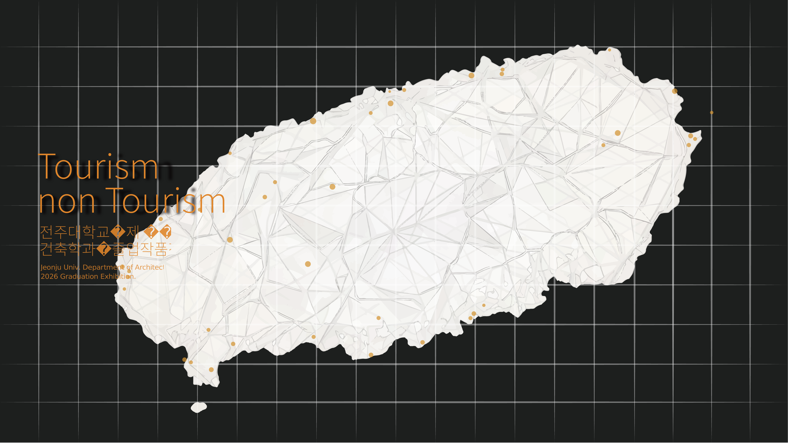

LIM YONGMIN STUDIO
제주의 역사·생태·공동체를 잇는 프로젝트를 통해 Tourism / Non Tourism의 경계를 재해석합니다.

CELEBRATION
메인 포스터를 그대로 사용해 첫 화면의 인상을 맞췄고, 아래부터는 실제 전시 정보와 이미지 중심으로 확장할 수 있게 열어뒀습니다.
원하면 다음엔 이 섹션에도 PDF/배치도 이미지를 그대로 이어붙일 수 있습니다.
WORK
제주의 역사·생태·공동체를 잇는 프로젝트를 통해 Tourism / Non Tourism의 경계를 재해석합니다.
현대인의 결핍과 공동체 감각을 제주라는 장소성 속에서 다시 건축적으로 탐구합니다.
보이는 관광 풍경 뒤에 숨은 생태, 노동, 역사, 일상을 드러내는 건축의 역할을 제안합니다.
WORKS
전시배치도 PDF도 같은 방식으로 이미지화해서 바로 이어 붙일 수 있습니다.